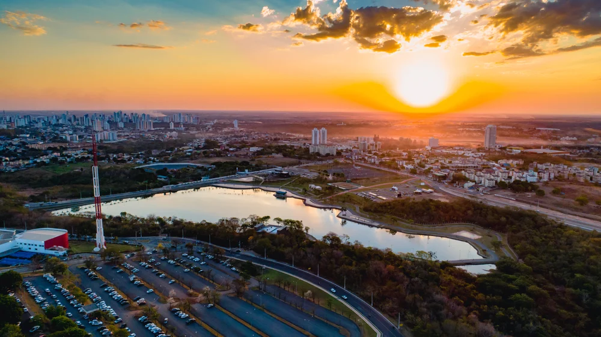

Mato Grosso é um estado localizado na região Centro-Oeste do Brasil. Sua capital é Cuiabá. O estado é conhecido por sua grande extensão territorial, pela riqueza natural e pela forte produção agrícola. No Mato Grosso estão presentes importantes biomas brasileiros, como a Amazônia, o Cerrado e o Pantanal. A economia do estado se destaca pela produção de soja, milho, algodão e pela criação de gado. Além disso, o Mato Grosso possui belas paisagens naturais, rios, cachoeiras e uma grande diversidade de animais e plantas, sendo um importante destino para o turismo ecológico.

voltar